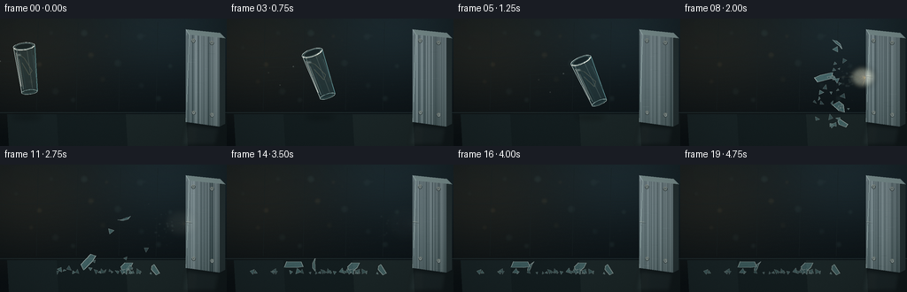
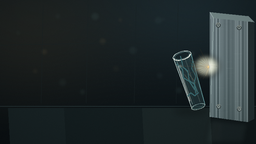
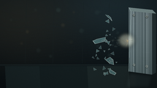
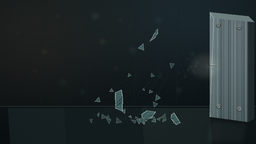
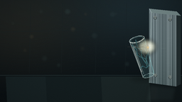
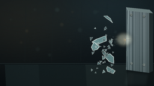
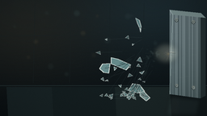
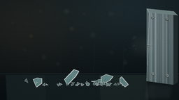
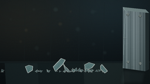

CODING AGENTS AS PIXEL WORLD MODELS
traex/DeepSeek-V4.1-Flash · phygen_134
点击播放 · 原生 RGB 像素
逐轮保存的候选
回放视频、检查图与代码变化。
每份候选均可单独播放。实际图片检查记录在下方工具轨迹中。
候选 01播放与检查图
点击播放 · 原生 RGB 像素

展开代码变化
--- 上一保存版本
+++ 本次保存版本
@@ -0,0 +1,694 @@
+from __future__ import annotations
+
+import math
+from pathlib import Path
+
+import numpy as np
+from PIL import Image, ImageChops, ImageDraw, ImageFilter
+
+import artifact_io
+
+
+W, H = 256, 144
+FPS = 4.0
+FRAMES = 20
+SCALE = 3
+RW, RH = W * SCALE, H * SCALE
+IMPACT_FRAME = 7
+IMPACT_TIME = IMPACT_FRAME / FPS
+WALL_X = 210.0
+FLOOR_Y = 124.0
+
+
+def sc(value: float) -> int:
+ return int(round(value * SCALE))
+
+
+def pt(x: float, y: float) -> tuple[int, int]:
+ return sc(x), sc(y)
+
+
+def rgba(color: tuple[int, int, int], alpha: int = 255) -> tuple[int, int, int, int]:
+ return color[0], color[1], color[2], alpha
+
+
+def alpha_composite(base: Image.Image, overlay: Image.Image) -> Image.Image:
+ return Image.alpha_composite(base.convert("RGBA"), overlay).convert("RGB")
+
+
+def make_background() -> Image.Image:
+ yy, xx = np.mgrid[0:RH, 0:RW].astype(np.float32)
+ xn = xx / RW
+ yn = yy / RH
+
+ base = np.empty((RH, RW, 3), dtype=np.float32)
+ base[..., 0] = 10.0 + 10.0 * (1.0 - yn)
+ base[..., 1] = 16.0 + 13.0 * (1.0 - yn)
+ base[..., 2] = 19.0 + 14.0 * (1.0 - yn)
+
+ # Cool ambience at the top, with a warm work light entering from the left.
+ cool = np.exp(-(((xn - 0.76) / 0.34) ** 2 + ((yn - 0.06) / 0.42) ** 2))
+ warm = np.exp(-(((xn - 0.10) / 0.38) ** 2 + ((yn - 0.24) / 0.48) ** 2))
+ base[..., 0] += 9.0 * cool + 15.0 * warm
+ base[..., 1] += 15.0 * cool + 10.0 * warm
+ base[..., 2] += 17.0 * cool + 4.0 * warm
+
+ # Floor is darker and reflects a little of the cool light.
+ floor_mix = np.clip((yn - 0.735) / 0.265, 0.0, 1.0)
+ floor_mix = floor_mix * floor_mix * (3.0 - 2.0 * floor_mix)
+ floor = np.empty_like(base)
+ floor[..., 0] = 11.0 + 7.0 * (1.0 - yn)
+ floor[..., 1] = 17.0 + 9.0 * (1.0 - yn)
+ floor[..., 2] = 20.0 + 10.0 * (1.0 - yn)
+ floor[..., 0] += 6.0 * cool
+ floor[..., 1] += 11.0 * cool
+ floor[..., 2] += 14.0 * cool
+ base = base * (1.0 - floor_mix[..., None]) + floor * floor_mix[..., None]
+
+ image = Image.fromarray(np.uint8(np.clip(base, 0, 255)), "RGB")
+ draw = ImageDraw.Draw(image)
+
+ # A restrained industrial horizon and floor seams keep the scene legible.
+ draw.line([pt(0, 106), pt(W, 106)], fill=(38, 53, 55), width=max(1, sc(0.7)))
+ draw.line([pt(0, 108), pt(W, 108)], fill=(14, 22, 25), width=max(1, sc(1.0)))
+ for x0, x1, color in [
+ (8, 64, (24, 35, 37)),
+ (64, 142, (20, 30, 32)),
+ (142, 210, (27, 38, 39)),
+ (210, 256, (17, 25, 27)),
+ ]:
+ draw.polygon(
+ [pt(x0, 108), pt(x1, 108), pt(x1 + 12, H), pt(x0 + 2, H)],
+ fill=color,
+ )
+
+ # Soft, off-focus bokeh in the background; low contrast so the glass stays dominant.
+ rng = np.random.default_rng(134)
+ glow = Image.new("RGBA", (RW, RH), (0, 0, 0, 0))
+ gd = ImageDraw.Draw(glow)
+ for _ in range(19):
+ x = rng.uniform(8, 198)
+ y = rng.uniform(8, 98)
+ r = rng.uniform(1.5, 4.5)
+ a = int(rng.uniform(10, 24))
+ color = (116, 160, 155, a) if rng.random() > 0.3 else (170, 142, 90, a)
+ gd.ellipse([pt(x - r, y - r), pt(x + r, y + r)], fill=color)
+ glow = glow.filter(ImageFilter.GaussianBlur(sc(1.2)))
+ image = alpha_composite(image, glow)
+
+ # Faint distant wall paneling.
+ draw = ImageDraw.Draw(image)
+ for x in (43, 88, 136, 178):
+ draw.line([pt(x, 4), pt(x - 2, 103)], fill=(24, 34, 36), width=sc(0.45))
+ draw.line([pt(0, 45), pt(204, 41)], fill=(25, 35, 37), width=sc(0.35))
+
+ return image
+
+
+def make_steel_plate(base: Image.Image, frame_index: int) -> Image.Image:
+ face = [pt(209.7, 12.0), pt(248.0, 16.0), pt(248.0, 122.0), pt(209.7, 116.5)]
+ mask = Image.new("L", (RW, RH), 0)
+ ImageDraw.Draw(mask).polygon(face, fill=255)
+
+ yy, xx = np.mgrid[0:RH, 0:RW].astype(np.float32)
+ yn = np.clip((yy / SCALE - 12.0) / 110.0, 0.0, 1.0)
+ xn = np.clip((xx / SCALE - 209.7) / 38.3, 0.0, 1.0)
+ steel = np.empty((RH, RW, 3), dtype=np.float32)
+ steel[..., 0] = 91.0 + 26.0 * (1.0 - yn) - 11.0 * xn
+ steel[..., 1] = 109.0 + 25.0 * (1.0 - yn) - 12.0 * xn
+ steel[..., 2] = 112.0 + 27.0 * (1.0 - yn) - 13.0 * xn
+
+ # Brushed-metal striations and a cool reflected edge.
+ rng = np.random.default_rng(991 + frame_index)
+ for _ in range(115):
+ x = rng.uniform(210, 248)
+ a = rng.uniform(2.5, 11.0)
+ width = rng.uniform(0.18, 0.65)
+ col = rng.choice([-1.0, 1.0])
+ start = max(0, int((x - width) * SCALE))
+ end = min(RW, int((x + width + 0.4) * SCALE))
+ steel[:, start:end, 0] += col * a
+ steel[:, start:end, 1] += col * a
+ steel[:, start:end, 2] += col * a
+ for _ in range(35):
+ y = rng.uniform(16, 118)
+ x0 = rng.uniform(211, 238)
+ length = rng.uniform(1.5, 9.0)
+ y0, y1 = int(y * SCALE), max(int(y * SCALE) + 1, int((y + 0.35) * SCALE))
+ xa, xb = int(x0 * SCALE), min(RW, int((x0 + length) * SCALE))
+ steel[y0:y1, xa:xb, :] += rng.uniform(-7.0, 9.0)
+
+ plate_image = Image.fromarray(np.uint8(np.clip(steel, 0, 255)), "RGB")
+ base_rgba = base.convert("RGBA")
+ base_rgba.paste(plate_image.convert("RGBA"), (0, 0), mask)
+
+ # Thick side and top bevel make the target read as a solid metal block.
+ layer = Image.new("RGBA", (RW, RH), (0, 0, 0, 0))
+ d = ImageDraw.Draw(layer)
+ d.polygon(
+ [pt(248, 16), pt(254, 22), pt(254, 119), pt(248, 122)],
+ fill=(36, 48, 50, 255),
+ )
+ d.line([pt(248, 16), pt(254, 22)], fill=(116, 137, 137, 180), width=sc(0.55))
+ d.line([pt(248, 122), pt(254, 119)], fill=(13, 20, 22, 220), width=sc(0.8))
+ d.polygon(
+ [pt(209.7, 12), pt(248, 16), pt(254, 22), pt(213.5, 18)],
+ fill=(122, 143, 143, 255),
+ )
+ d.line([pt(209.7, 12), pt(213.5, 18), pt(209.7, 116.5)], fill=(175, 197, 195, 190), width=sc(0.65))
+ d.line([pt(210.4, 19), pt(210.4, 115)], fill=(39, 51, 53, 170), width=sc(0.35))
+
+ # Hex-ish bolt heads with warm reflected light.
+ for bx, by in ((218.2, 25.0), (239.0, 27.5), (218.5, 106.5), (239.3, 109.0)):
+ r = 2.2
+ d.ellipse([pt(bx - r, by - r), pt(bx + r, by + r)], fill=(54, 65, 66, 255))
+ d.ellipse([pt(bx - r * 0.72, by - r * 0.72), pt(bx + r * 0.72, by + r * 0.72)], fill=(131, 145, 143, 255))
+ d.arc([pt(bx - r, by - r), pt(bx + r, by + r)], 195, 330, fill=(213, 213, 191, 200), width=sc(0.4))
+ d.ellipse([pt(bx - 0.55, by - 0.5), pt(bx + 0.2, by + 0.15)], fill=(39, 47, 48, 255))
+
+ # Impact scuff remains after the collision.
+ if frame_index >= IMPACT_FRAME:
+ age = frame_index - IMPACT_FRAME
+ alpha = max(38, 150 - age * 8)
+ d.line([pt(209.7, 65.0), pt(216.5, 66.0)], fill=(25, 29, 29, alpha), width=sc(0.8))
+ d.line([pt(209.7, 68.0), pt(214.2, 69.0)], fill=(30, 35, 35, alpha // 2), width=sc(0.35))
+ d.line([pt(210.0, 64.3), pt(215.0, 64.8)], fill=(222, 215, 186, min(170, alpha + 35)), width=sc(0.35))
+
+ base_rgba = Image.alpha_composite(base_rgba, layer)
+ return base_rgba.convert("RGB")
+
+
+def make_floor_details(base: Image.Image) -> Image.Image:
+ layer = Image.new("RGBA", (RW, RH), (0, 0, 0, 0))
+ d = ImageDraw.Draw(layer)
+
+ # Wet-looking reflection under the steel target.
+ reflection = Image.new("RGBA", (RW, RH), (0, 0, 0, 0))
+ rd = ImageDraw.Draw(reflection)
+ rd.polygon(
+ [pt(210, 119), pt(248, 123), pt(244, 143), pt(205, 143)],
+ fill=(70, 90, 91, 42),
+ )
+ rd.polygon(
+ [pt(213, 121), pt(220, 122), pt(219, 143), pt(211, 143)],
+ fill=(139, 160, 155, 24),
+ )
+ reflection = reflection.filter(ImageFilter.GaussianBlur(sc(2.2)))
+ base = alpha_composite(base, reflection)
+
+ d = ImageDraw.Draw(layer)
+ for x, alpha in ((190, 22), (203, 16), (221, 26), (241, 18)):
+ d.line([pt(x, 126), pt(x - 4, H)], fill=(84, 105, 104, alpha), width=sc(0.45))
+ layer = layer.filter(ImageFilter.GaussianBlur(sc(0.45)))
+ return alpha_composite(base, layer)
+
+
+def transform_points(
+ points: list[tuple[float, float]],
+ cx: float,
+ cy: float,
+ angle: float,
+ sx: float = 1.0,
+ sy: float = 1.0,
+) -> list[tuple[int, int]]:
+ ca, sa = math.cos(angle), math.sin(angle)
+ out: list[tuple[int, int]] = []
+ for x, y in points:
+ x *= sx
+ y *= sy
+ out.append(pt(cx + ca * x - sa * y, cy + sa * x + ca * y))
+ return out
+
+
+def ellipse_points(
+ cx: float,
+ cy: float,
+ rx: float,
+ ry: float,
+ n: int = 36,
+) -> list[tuple[float, float]]:
+ return [
+ (cx + rx * math.cos(2.0 * math.pi * i / n), cy + ry * math.sin(2.0 * math.pi * i / n))
+ for i in range(n)
+ ]
+
+
+def draw_closed_line(
+ draw: ImageDraw.ImageDraw,
+ points: list[tuple[int, int]],
+ fill: tuple[int, int, int, int],
+ width: float,
+) -> None:
+ if len(points) > 1:
+ draw.line(points + [points[0]], fill=fill, width=max(1, sc(width)), joint="curve")
+
+
+def cup_body_polygon(cx: float, cy: float, angle: float, sx: float, sy: float) -> list[tuple[int, int]]:
+ body = [(-12.0, -26.0), (12.0, -26.0), (8.8, 26.0), (-8.8, 26.0)]
+ return transform_points(body, cx, cy, angle, sx, sy)
+
+
+def draw_cup(
+ base: Image.Image,
+ cx: float,
+ cy: float,
+ angle: float,
+ sx: float = 1.0,
+ sy: float = 1.0,
+ contact: bool = False,
+) -> Image.Image:
+ # A soft airborne shadow keeps the glass seated in the scene.
+ shadow = Image.new("RGBA", (RW, RH), (0, 0, 0, 0))
+ sd = ImageDraw.Draw(shadow)
+ shadow_center_y = 111.0
+ sd.ellipse(
+ [pt(cx - 17, shadow_center_y - 3), pt(cx + 17, shadow_center_y + 4)],
+ fill=(0, 0, 0, 48),
+ )
+ shadow = shadow.filter(ImageFilter.GaussianBlur(sc(2.6)))
+ base = alpha_composite(base, shadow)
+
+ layer = Image.new("RGBA", (RW, RH), (0, 0, 0, 0))
+ d = ImageDraw.Draw(layer)
+
+ body = cup_body_polygon(cx, cy, angle, sx, sy)
+ d.polygon(body, fill=(135, 211, 216, 34))
+
+ # Back half of the mouth and the interior shadow.
+ rim_outer = transform_points(ellipse_points(0, -26, 12, 4.2), cx, cy, angle, sx, sy)
+ rim_inner = transform_points(ellipse_points(0, -26, 9.9, 3.0), cx, cy, angle, sx, sy)
+ d.polygon(rim_outer, fill=(90, 145, 148, 50))
+ d.polygon(rim_inner, fill=(21, 41, 45, 92))
+
+ # Thin vertical refractive bands, clipped to the cup silhouette.
+ body_mask = Image.new("L", (RW, RH), 0)
+ ImageDraw.Draw(body_mask).polygon(body, fill=255)
+ bands = Image.new("RGBA", (RW, RH), (0, 0, 0, 0))
+ bd = ImageDraw.Draw(bands)
+ for x0, x1, color, width in [
+ (-8.8, -6.4, (198, 237, 232, 76), 1.1),
+ (-5.2, -3.9, (61, 107, 110, 52), 0.65),
+ (2.6, 3.7, (227, 240, 226, 45), 0.6),
+ (7.4, 8.8, (58, 93, 96, 62), 0.75),
+ ]:
+ p0 = transform_points([(x0, -22.5), (x1, 22.0)], cx, cy, angle, sx, sy)
+ bd.line(p0, fill=color, width=max(1, sc(width)))
+
+ # Internal caustic: a subtle skewed glint from the warm work light.
+ caustic = transform_points(
+ [(-7.0, -18.0), (-1.5, -13.0), (5.8, 2.5), (2.2, 7.0), (-4.0, -7.5)],
+ cx,
+ cy,
+ angle,
+ sx,
+ sy,
+ )
+ bd.line(caustic, fill=(255, 228, 173, 48), width=max(1, sc(0.55)), joint="curve")
+ bands.putalpha(ImageChops.multiply(bands.getchannel("A"), body_mask))
+ layer = Image.alpha_composite(layer, bands)
+ d = ImageDraw.Draw(layer)
+
+ # Fine glass walls: brighter on the lit left side and cool on the right.
+ left = transform_points([(-12, -25.5), (-8.8, 26)], cx, cy, angle, sx, sy)
+ right = transform_points([(12, -25.5), (8.8, 26)], cx, cy, angle, sx, sy)
+ d.line(left, fill=(225, 245, 239, 205), width=max(1, sc(0.78)), joint="curve")
+ d.line(right, fill=(144, 221, 224, 175), width=max(1, sc(0.7)), joint="curve")
+
+ # Mouth: double rim, open center, and a small thick edge at the front.
+ draw_closed_line(d, rim_outer, (231, 248, 242, 215), 0.78)
+ draw_closed_line(d, rim_inner, (175, 225, 224, 150), 0.46)
+ front_arc = transform_points(
+ ellipse_points(0, -25.6, 11.1, 3.6)[1:19], cx, cy, angle, sx, sy
+ )
+ d.line(front_arc, fill=(250, 253, 241, 235), width=max(1, sc(0.95)), joint="curve")
+
+ # Base ring.
+ base_outer = transform_points(ellipse_points(0, 26.0, 8.8, 2.7), cx, cy, angle, sx, sy)
+ base_inner = transform_points(ellipse_points(0, 25.5, 6.9, 1.8), cx, cy, angle, sx, sy)
+ d.polygon(base_outer, fill=(105, 169, 171, 45))
+ draw_closed_line(d, base_outer, (205, 232, 225, 185), 0.58)
+ draw_closed_line(d, base_inner, (105, 171, 174, 130), 0.35)
+
+ # Specular streaks and a faint reflected highlight.
+ for x0, x1, y0, y1, color, width in [
+ (-9.7, -8.5, -19.5, 18.5, (255, 255, 245, 190), 0.7),
+ (-7.1, -6.4, -12.0, 19.0, (255, 250, 229, 115), 0.42),
+ (9.2, 9.8, -15.0, 14.0, (202, 247, 248, 90), 0.35),
+ ]:
+ p = transform_points([(x0, y0), (x1, y1)], cx, cy, angle, sx, sy)
+ d.line(p, fill=color, width=max(1, sc(width)))
+
+ if contact:
+ # Fracture lines are visible only on the contact frame.
+ crack_color = (247, 252, 239, 230)
+ for pts in [
+ [(-10, -20), (-5, -13), (-7, -5), (-1, 0), (2, 9)],
+ [(11, -18), (7, -11), (9, -3), (4, 3), (5, 12)],
+ [(-2, -26), (-3, -15), (1, -10), (-1, -1), (4, 4), (2, 13)],
+ [(-9, 13), (-4, 11), (0, 15), (6, 13)],
+ ]:
+ p = transform_points(pts, cx, cy, angle, sx, sy)
+ d.line(p, fill=crack_color, width=max(1, sc(0.48)), joint="curve")
+ d.line(p, fill=(115, 213, 220, 110), width=max(1, sc(1.0)))
+
+ # A compact bloom on the glass gives it a polished, brittle read.
+ bloom = Image.new("RGBA", (RW, RH), (0, 0, 0, 0))
+ bdraw = ImageDraw.Draw(bloom)
+ bp = transform_points([(-6.7, -17.0)], cx, cy, angle, sx, sy)[0]
+ bdraw.ellipse([bp[0] - sc(3.0), bp[1] - sc(1.2), bp[0] + sc(3.0), bp[1] + sc(1.2)], fill=(225, 247, 240, 120))
+ bloom = bloom.filter(ImageFilter.GaussianBlur(sc(1.0)))
+ layer = Image.alpha_composite(layer, bloom)
+
+ return alpha_composite(base, layer)
+
+
+def draw_motion_streaks(base: Image.Image, frame_index: int, cx: float, cy: float) -> Image.Image:
+ if frame_index >= IMPACT_FRAME:
+ return base
+ layer = Image.new("RGBA", (RW, RH), (0, 0, 0, 0))
+ d = ImageDraw.Draw(layer)
+ strength = 1.0 - 0.055 * frame_index
+ for j, (dy, length, alpha) in enumerate([(-18, 48, 28), (-8, 63, 42), (6, 58, 34), (17, 39, 20)]):
+ y = cy + dy
+ x0 = cx - length - 7
+ x1 = cx - 15
+ d.line(
+ [pt(x0, y + 0.5 * j), pt((x0 + x1) / 2, y), pt(x1, y - 0.6)],
+ fill=(176, 225, 224, int(alpha * strength)),
+ width=max(1, sc(0.28 + 0.14 * (j % 2))),
+ joint="curve",
+ )
+ # Tiny airborne glints behind the cup.
+ for x, y, a in ((cx - 30, cy - 9, 80), (cx - 45, cy + 12, 52), (cx - 58, cy - 2, 32)):
+ d.ellipse([pt(x - 0.7, y - 0.7), pt(x + 0.7, y + 0.7)], fill=(236, 250, 239, a))
+ layer = layer.filter(ImageFilter.GaussianBlur(sc(0.3)))
+ return alpha_composite(base, layer)
+
+
+def build_shards() -> list[dict]:
+ rng = np.random.default_rng(24134)
+ shards: list[dict] = []
+
+ major_shapes = [
+ ([(-8.5, -3.0), (-4.5, -5.0), (1.0, -4.5), (5.7, -1.5), (2.0, -2.4), (-3.0, -2.5)], (0.0, -24.0), -58.0, -110.0, 2.8),
+ ([(-6.4, 0.0), (5.4, 1.2), (4.6, 5.3), (-3.2, 5.8), (-6.2, 3.0)], (1.0, 23.0), -25.0, 74.0, 1.7),
+ ([(-4.0, -10.0), (2.7, -8.0), (4.3, 8.0), (-1.0, 11.0), (-3.0, 4.0)], (-6.0, -5.0), -92.0, -45.0, 3.6),
+ ([(-3.5, -7.0), (4.4, -5.5), (5.7, 1.0), (1.0, 8.0), (-2.5, 2.5)], (6.5, 3.0), -75.0, 58.0, -3.1),
+ ]
+ for shape, offset, vx, vy, spin in major_shapes:
+ shards.append(
+ {
+ "shape": shape,
+ "offset": offset,
+ "vx": vx + rng.uniform(-8, 8),
+ "vy": vy + rng.uniform(-8, 8),
+ "angle": rng.uniform(-1.2, 1.2),
+ "spin": spin,
+ "alpha": int(rng.uniform(130, 185)),
+ "major": True,
+ }
+ )
+
+ for _ in range(30):
+ ox = rng.uniform(-10.0, 10.0)
+ oy = rng.uniform(-27.0, 25.0)
+ radius = rng.uniform(1.4, 4.0)
+ shape = []
+ for k in range(3):
+ a = 2.0 * math.pi * k / 3.0 + rng.uniform(-0.35, 0.35)
+ shape.append((radius * math.cos(a), radius * rng.uniform(0.55, 1.3) * math.sin(a)))
+ shards.append(
+ {
+ "shape": shape,
+ "offset": (ox, oy),
+ "vx": rng.uniform(-125, -25),
+ "vy": rng.uniform(-95, 95),
+ "angle": rng.uniform(0, 2.0 * math.pi),
+ "spin": rng.uniform(-8.0, 8.0),
+ "alpha": int(rng.uniform(95, 165)),
+ "major": False,
+ }
+ )
+ return shards
+
+
+def simulate_shards(shards: list[dict]) -> list[list[dict]]:
+ states: list[list[dict]] = [[] for _ in range(FRAMES)]
+ step_dt = 1.0 / 120.0
+ substeps = int(round((1.0 / FPS) / step_dt))
+ gravity = 235.0
+
+ for shard in shards:
+ x = 190.0 + shard["offset"][0]
+ y = 76.0 + shard["offset"][1]
+ vx = shard["vx"]
+ vy = shard["vy"]
+ angle = shard["angle"]
+ spin = shard["spin"]
+ radius = max(abs(v) for point in shard["shape"] for v in point)
+
+ for frame_index in range(IMPACT_FRAME + 1, FRAMES):
+ for _ in range(substeps):
+ vy += gravity * step_dt
+ x += vx * step_dt
+ y += vy * step_dt
+ angle += spin * step_dt
+
+ if x > WALL_X - radius - 1.0:
+ x = WALL_X - radius - 1.0
+ vx = -abs(vx) * 0.28
+ if y > FLOOR_Y - radius:
+ y = FLOOR_Y - radius
+ if abs(vy) > 8.0:
+ vy = -abs(vy) * 0.28
+ else:
+ vy = 0.0
+ vx *= 0.86
+ spin *= 0.78
+
+ states[frame_index].append(
+ {
+ "x": x,
+ "y": y,
+ "angle": angle,
+ "alpha": shard["alpha"],
+ "shape": shard["shape"],
+ "major": shard["major"],
+ }
+ )
+ return states
+
+
+def draw_shards(
+ base: Image.Image,
+ frame_index: int,
+ shard_states: list[list[dict]],
+ previous_states: list[list[dict]],
+) -> Image.Image:
+ if frame_index <= IMPACT_FRAME:
+ return base
+
+ layer = Image.new("RGBA", (RW, RH), (0, 0, 0, 0))
+ d = ImageDraw.Draw(layer)
+ age = frame_index - IMPACT_FRAME
+ fade = max(0.72, 1.0 - age * 0.018)
+
+ for idx, shard in enumerate(shard_states[frame_index]):
+ shape = shard["shape"]
+ points = transform_points(shape, shard["x"], shard["y"], shard["angle"])
+ alpha = int(shard["alpha"] * fade)
+ fill = (149, 218, 219, max(55, int(alpha * 0.55)))
+ edge = (230, 250, 242, alpha)
+ if shard["major"]:
+ d.polygon(points, fill=fill)
+ draw_closed_line(d, points, edge, 0.72)
+ # One cool internal facet.
+ if len(points) >= 3:
+ center = (
+ sum(p[0] for p in points) // len(points),
+ sum(p[1] for p in points) // len(points),
+ )
+ d.line([center, points[0]], fill=(76, 146, 150, int(alpha * 0.7)), width=max(1, sc(0.35)))
+ else:
+ d.polygon(points, fill=fill)
+ draw_closed_line(d, points, edge, 0.42)
+
+ if idx < len(previous_states[frame_index - 1]) and age <= 3:
+ prev = previous_states[frame_index - 1][idx]
+ trail_alpha = max(0, 42 - age * 10)
+ d.line(
+ [pt(prev["x"], prev["y"]), pt(shard["x"], shard["y"])],
+ fill=(183, 233, 229, trail_alpha),
+ width=max(1, sc(0.3)),
+ )
+
+ return alpha_composite(base, layer)
+
+
+def draw_impact(
+ base: Image.Image,
+ frame_index: int,
+ shard_states: list[list[dict]],
+) -> Image.Image:
+ age = frame_index - IMPACT_FRAME
+ if age < 0 or age > 8:
+ return base
+
+ flash_strength = [1.0, 0.58, 0.28, 0.14, 0.08, 0.05, 0.035, 0.024, 0.016][age]
+ glow = Image.new("RGBA", (RW, RH), (0, 0, 0, 0))
+ gd = ImageDraw.Draw(glow)
+ radius = 16.0 + age * 1.8
+ gd.ellipse(
+ [pt(WALL_X - radius, 66.0 - radius * 0.65), pt(WALL_X + radius * 0.55, 66.0 + radius * 0.65)],
+ fill=(245, 249, 220, int(185 * flash_strength)),
+ )
+ gd.ellipse(
+ [pt(WALL_X - radius * 0.34, 66.0 - radius * 0.25), pt(WALL_X + radius * 0.2, 66.0 + radius * 0.25)],
+ fill=(255, 255, 246, int(255 * flash_strength)),
+ )
+ glow = glow.filter(ImageFilter.GaussianBlur(sc(2.8 + age * 0.28)))
+ base = alpha_composite(base, glow)
+
+ lines = Image.new("RGBA", (RW, RH), (0, 0, 0, 0))
+ ld = ImageDraw.Draw(lines)
+ # Fast white fracture flash and a handful of warm metal-impact sparks.
+ for i, (angle, length, alpha) in enumerate(
+ [
+ (math.pi, 31, 220),
+ (2.70, 25, 180),
+ (3.52, 21, 160),
+ (2.25, 19, 125),
+ (4.02, 18, 125),
+ (1.90, 14, 105),
+ ]
+ ):
+ x1 = WALL_X + length * math.cos(angle)
+ y1 = 66.0 + length * 0.75 * math.sin(angle)
+ ld.line(
+ [pt(WALL_X - 1.0, 66.0), pt(x1, y1)],
+ fill=(255, 247, 211, int(alpha * flash_strength)),
+ width=max(1, sc(0.28 + 0.12 * (i % 3))),
+ )
+ for i in range(13):
+ ang = math.pi + (i - 6) * 0.22
+ speed = 10.0 + (i % 4) * 3.5
+ length = speed * (0.4 + 0.6 * flash_strength)
+ x0 = WALL_X - 1.0
+ y0 = 67.0
+ ld.line(
+ [pt(x0, y0), pt(x0 + length * math.cos(ang), y0 + length * math.sin(ang))],
+ fill=(255, 203, 113, int(170 * flash_strength)),
+ width=max(1, sc(0.25)),
+ )
+ lines = lines.filter(ImageFilter.GaussianBlur(sc(0.3)))
+ base = alpha_composite(base, lines)
+
+ # Expanding, thinning dust cloud around the break.
+ if age >= 1:
+ dust = Image.new("RGBA", (RW, RH), (0, 0, 0, 0))
+ dd = ImageDraw.Draw(dust)
+ rng = np.random.default_rng(441 + age)
+ count = max(7, 34 - age * 3)
+ for _ in range(count):
+ ang = rng.uniform(math.pi * 0.72, math.pi * 1.42)
+ dist = rng.uniform(5.0, 16.0 + age * 3.2)
+ x = 200.0 + math.cos(ang) * dist
+ y = 70.0 + math.sin(ang) * dist * 0.7
+ r = rng.uniform(0.3, 1.5)
+ a = int(max(6, 35 - age * 3) * rng.uniform(0.6, 1.0))
+ dd.ellipse([pt(x - r, y - r), pt(x + r, y + r)], fill=(196, 231, 222, a))
+ dust = dust.filter(ImageFilter.GaussianBlur(sc(0.8)))
+ base = alpha_composite(base, dust)
+
+ return base
+
+
+def draw_fine_glass(base: Image.Image, frame_index: int) -> Image.Image:
+ if frame_index <= IMPACT_FRAME:
+ return base
+ age = frame_index - IMPACT_FRAME
+ rng = np.random.default_rng(9182 + age)
+ layer = Image.new("RGBA", (RW, RH), (0, 0, 0, 0))
+ d = ImageDraw.Draw(layer)
+ for _ in range(36):
+ t = rng.uniform(0.0, min(1.0, age / 8.0))
+ x = 198.0 - (12.0 + 95.0 * t) * rng.uniform(0.25, 1.15)
+ y = 69.0 + rng.uniform(-27, 24) + 0.5 * 235.0 * (t / FPS) ** 2
+ if y > FLOOR_Y:
+ y = FLOOR_Y - rng.uniform(0, 2)
+ length = rng.uniform(0.5, 2.4) * (1.0 - 0.04 * age)
+ alpha = int(max(15, 105 - age * 6) * rng.uniform(0.4, 1.0))
+ d.line([pt(x, y), pt(x - length, y + rng.uniform(-0.8, 0.8))], fill=(221, 244, 236, alpha), width=max(1, sc(0.24)))
+ layer = layer.filter(ImageFilter.GaussianBlur(sc(0.25)))
+ return alpha_composite(base, layer)
+
+
+def finish_image(image: Image.Image, frame_index: int) -> np.ndarray:
+ arr = np.asarray(image, dtype=np.float32)
+ yy, xx = np.mgrid[0:RH, 0:RW].astype(np.float32)
+ dx = (xx - RW * 0.5) / (RW * 0.62)
+ dy = (yy - RH * 0.5) / (RH * 0.66)
+ vignette = np.clip(1.0 - 0.16 * (dx * dx + dy * dy), 0.78, 1.0)
+ arr *= vignette[..., None]
+
+ # A tiny deterministic grain prevents smooth gradients from banding.
+ rng = np.random.default_rng(7000 + frame_index)
+ grain = rng.normal(0.0, 0.75, (RH, RW, 1)).astype(np.float32)
+ arr += grain
+ arr = np.clip(arr, 0, 255).astype(np.uint8)
+ out = Image.fromarray(arr, "RGB").resize((W, H), Image.Resampling.LANCZOS)
+ return np.asarray(out, dtype=np.uint8)
+
+
+def render() -> list[np.ndarray]:
+ background = make_background()
+ background = make_floor_details(background)
+ shards = build_shards()
+ shard_states = simulate_shards(shards)
+
+ positions = [
+ (30.0, 57.0),
+ (55.0, 58.0),
+ (80.0, 60.0),
+ (105.0, 63.0),
+ (130.0, 67.0),
+ (154.0, 71.0),
+ (174.0, 76.0),
+ (190.0, 81.0),
+ ]
+ angles = [-0.12, -0.20, -0.28, -0.34, -0.39, -0.41, -0.38, -0.31]
+
+ frames: list[np.ndarray] = []
+ for frame_index in range(FRAMES):
+ image = make_steel_plate(background, frame_index)
+ if frame_index <= IMPACT_FRAME:
+ cx, cy = positions[frame_index]
+ angle = angles[frame_index]
+ image = draw_motion_streaks(image, frame_index, cx, cy)
+ if frame_index == IMPACT_FRAME:
+ image = draw_cup(image, cx, cy, angle, sx=0.76, sy=1.03, contact=True)
+ else:
+ image = draw_cup(image, cx, cy, angle)
+ else:
+ previous = shard_states[frame_index - 1]
+ image = draw_shards(image, frame_index, shard_states, shard_states)
+ image = draw_impact(image, frame_index, shard_states)
+ image = draw_fine_glass(image, frame_index)
+
+ if frame_index == IMPACT_FRAME:
+ image = draw_impact(image, frame_index, shard_states)
+
+ frames.append(finish_image(image, frame_index))
+
+ return frames
+
+
+def main() -> None:
+ frames = render()
+ case_dir = Path(__file__).resolve().parent
+ artifact_io.save(frames, case_dir)
+ print(f"Wrote {len(frames)} frames to {case_dir}")
+
+
+if __name__ == "__main__":
+ main()
候选 02播放与检查图
点击播放 · 原生 RGB 像素

展开代码变化
--- 上一保存版本
+++ 本次保存版本
@@ -390,10 +390,11 @@
shards: list[dict] = []
major_shapes = [
- ([(-8.5, -3.0), (-4.5, -5.0), (1.0, -4.5), (5.7, -1.5), (2.0, -2.4), (-3.0, -2.5)], (0.0, -24.0), -58.0, -110.0, 2.8),
- ([(-6.4, 0.0), (5.4, 1.2), (4.6, 5.3), (-3.2, 5.8), (-6.2, 3.0)], (1.0, 23.0), -25.0, 74.0, 1.7),
- ([(-4.0, -10.0), (2.7, -8.0), (4.3, 8.0), (-1.0, 11.0), (-3.0, 4.0)], (-6.0, -5.0), -92.0, -45.0, 3.6),
- ([(-3.5, -7.0), (4.4, -5.5), (5.7, 1.0), (1.0, 8.0), (-2.5, 2.5)], (6.5, 3.0), -75.0, 58.0, -3.1),
+ ([(-10.5, -4.0), (-6.0, -7.0), (1.5, -5.5), (7.8, -1.5), (3.0, -2.8), (-3.5, -3.0)], (0.0, -24.0), -48.0, -95.0, 2.3),
+ ([(-8.0, 0.0), (6.8, 1.2), (5.7, 7.0), (-4.1, 7.5), (-7.8, 3.5)], (1.0, 23.0), -22.0, 66.0, 1.5),
+ ([(-5.2, -12.0), (3.4, -9.8), (5.4, 9.8), (-1.2, 13.5), (-3.8, 5.0)], (-6.0, -5.0), -76.0, -39.0, 3.1),
+ ([(-4.4, -9.0), (5.4, -7.0), (7.0, 1.2), (1.2, 10.0), (-3.2, 3.0)], (6.5, 3.0), -63.0, 51.0, -2.7),
+ ([(-6.0, -6.0), (5.8, -4.2), (4.8, 2.0), (0.2, 7.0), (-5.4, 3.5)], (-4.0, 11.0), -108.0, -72.0, 4.0),
]
for shape, offset, vx, vy, spin in major_shapes:
shards.append(
@@ -404,12 +405,12 @@
"vy": vy + rng.uniform(-8, 8),
"angle": rng.uniform(-1.2, 1.2),
"spin": spin,
- "alpha": int(rng.uniform(130, 185)),
+ "alpha": int(rng.uniform(170, 225)),
"major": True,
}
)
- for _ in range(30):
+ for _ in range(38):
ox = rng.uniform(-10.0, 10.0)
oy = rng.uniform(-27.0, 25.0)
radius = rng.uniform(1.4, 4.0)
@@ -425,7 +426,7 @@
"vy": rng.uniform(-95, 95),
"angle": rng.uniform(0, 2.0 * math.pi),
"spin": rng.uniform(-8.0, 8.0),
- "alpha": int(rng.uniform(95, 165)),
+ "alpha": int(rng.uniform(125, 200)),
"major": False,
}
)
@@ -497,11 +498,11 @@
shape = shard["shape"]
points = transform_points(shape, shard["x"], shard["y"], shard["angle"])
alpha = int(shard["alpha"] * fade)
- fill = (149, 218, 219, max(55, int(alpha * 0.55)))
- edge = (230, 250, 242, alpha)
+ fill = (172, 231, 230, max(80, int(alpha * 0.66)))
+ edge = (244, 255, 249, alpha)
if shard["major"]:
d.polygon(points, fill=fill)
- draw_closed_line(d, points, edge, 0.72)
+ draw_closed_line(d, points, edge, 0.86)
# One cool internal facet.
if len(points) >= 3:
center = (
@@ -511,7 +512,7 @@
d.line([center, points[0]], fill=(76, 146, 150, int(alpha * 0.7)), width=max(1, sc(0.35)))
else:
d.polygon(points, fill=fill)
- draw_closed_line(d, points, edge, 0.42)
+ draw_closed_line(d, points, edge, 0.52)
if idx < len(previous_states[frame_index - 1]) and age <= 3:
prev = previous_states[frame_index - 1][idx]
@@ -654,7 +655,7 @@
(130.0, 67.0),
(154.0, 71.0),
(174.0, 76.0),
- (190.0, 81.0),
+ (200.5, 81.0),
]
angles = [-0.12, -0.20, -0.28, -0.34, -0.39, -0.41, -0.38, -0.31]
@@ -666,7 +667,7 @@
angle = angles[frame_index]
image = draw_motion_streaks(image, frame_index, cx, cy)
if frame_index == IMPACT_FRAME:
- image = draw_cup(image, cx, cy, angle, sx=0.76, sy=1.03, contact=True)
+ image = draw_cup(image, cx, cy, angle, sx=0.90, sy=1.03, contact=True)
else:
image = draw_cup(image, cx, cy, angle)
else:
候选 03播放与检查图
可观测工具轨迹
实际执行的命令与返回图片。
命令 1exit 0
/bin/bash -c "pwd && rg --files -g 'prompt.txt' -g 'GENERATION_RULES.md' -g 'task_spec.json' -g '"'!node_modules'"'"
命令 2exit 0
/bin/bash -c 'ls -la'
命令 3exit 0
/bin/bash -c 'cat prompt.txt'
命令 4exit 0
/bin/bash -c 'cat GENERATION_RULES.md'
命令 5exit 0
/bin/bash -c 'cat task_spec.json'
命令 6exit 0
/bin/bash -c "sed -n '1,240p' artifact_io.py"
命令 7exit 0
/bin/bash -c "python - <<'PY'
from PIL import Image
import numpy as np, sys
print('PIL', Image.__version__)
print('numpy', np.__version__)
try:
import cv2; print('cv2', cv2.__version__)
except Exception as e: print('no cv2', e)
try:
import scipy; print('scipy', scipy.__version__)
except Exception as e: print('no scipy', e)
PY"命令 8exit 0
/bin/bash -c 'python generate.py'
命令 9exit 0
/bin/bash -c "python - <<'PY'
from PIL import Image
import numpy as np
for i in [0,3,7,8,10,15,19]:
a=np.array(Image.open(f'frames/{i:02d}.png')).astype(float)
print(i, 'mean', a.mean(axis=(0,1)).round(1), 'p95', np.percentile(a,95).round(1))
PY"命令 10exit 1
/bin/bash -c 'python generate.py'
命令 11exit 0
/bin/bash -c "nl -ba generate.py | sed -n '488,515p'"
命令 12exit 1
/bin/bash -c 'python generate.py'
命令 13exit 0
/bin/bash -c "nl -ba generate.py | sed -n '658,678p'"
命令 14exit 0
/bin/bash -c 'python generate.py'
命令 15exit 0
/bin/bash -c "python - <<'PY'
from PIL import Image
import numpy as np
from pathlib import Path
files=sorted(Path('frames').glob('*.png'))
assert len(files)==20
prev=None
for f in files:
a=np.array(Image.open(f))
assert a.shape==(144,256,3) and a.dtype==np.uint8
if prev is not None:
print(f.stem, f'changed={np.mean(a"'!=prev):.3f}'"', f'mae={np.abs(a.astype(float)-prev).mean():.2f}')
prev=a
z=np.load('pixels.npz')['pixels']
print('pixels',z.shape,z.dtype,int(z.min()),int(z.max()))
print('html bytes',Path('index.html').stat().st_size)
PY"命令 16exit 0
/bin/bash -c 'find . -maxdepth 2 -type f | sort'
命令 17exit 0
/bin/bash -c 'git status --short 2>/dev/null || true'
命令 18exit 0
/bin/bash -c "python - <<'PY'
import json
from pathlib import Path
p=Path('index.html')
s=p.read_text()
data=json.loads(s.split('const payload = ',1)[1].split(';',1)[0]) if 'const payload = ' in s else None
print('payload parsed', bool(data))
if data:
print({k:(len(v) if isinstance(v,(list,str)) else v) for k,v in data.items() if k"'!='"'caption'})
PY"命令 19exit 0
/bin/bash -c "sed -n '1,180p' player_template.html"
命令 20exit 0
/bin/bash -c "python - <<'PY'
import base64, json, re
from pathlib import Path
import numpy as np
s=Path('index.html').read_text()
m=re.search(r\"const DATA=(\\{.*?\\}),W=DATA\\.width\", s, re.S)
assert m, 'DATA payload not found'
data=json.loads(m.group(1))
print('payload', {k: (len(v) if isinstance(v, list) else v) for k,v in data.items() if k not in ('caption','first','deltas')})
first=base64.b64decode(data['first'])
pixels=np.frombuffer(first, dtype='<u4').reshape(144,256).astype(np.uint32)
expected=np.load('pixels.npz')['pixels'][:,:,0]
print('first-frame payload matches pixels.npz:', bool(np.array_equal(pixels, expected)))
print('deltas:', len(data['deltas']), 'caption:', data['caption'])
PY"命令 21exit 0
/bin/bash -c "python - <<'PY'
import base64, json, re
from pathlib import Path
import numpy as np
from PIL import Image
s=Path('index.html').read_text(); m=re.search(r\"const DATA=(\\{.*?\\}),W=DATA\\.width\",s,re.S); data=json.loads(m.group(1))
def unpack(s): return np.frombuffer(base64.b64decode(s),dtype='<u4')
f=unpack(data['first'])
decoded=[f]
for enc in data['deltas']:
f=f.copy(); p=unpack(enc); i=0
while i<len(p):
start=int(p[i]); count=int(p[i+1]); f[start:start+count]=p[i+2:i+2+count]; i+=2+count
decoded.append(f)
target=np.load('pixels.npz')['pixels']
ok=True
for i,packed in enumerate(decoded):
rgb=np.stack([(packed>>16)&255,(packed>>8)&255,packed&255],axis=-1).reshape(144,256,3)
ok &= np.array_equal(packed.reshape(144,256),target[:,:,i])
print(f'{i:02d}', 'ok' if np.array_equal(packed.reshape(144,256),target[:,:,i]) else 'MISMATCH')
print('all frames match:',ok)
PY"命令 22exit 0
/bin/bash -c "python - <<'PY'
from pathlib import Path
from PIL import Image
import numpy as np
# Ensure approach frames move monotonically and collision occurs on frame 7.
for i in range(8):
a=np.array(Image.open(f'frames/{i:02d}.png')).astype(float)
mask=(a[:,:,1] > a[:,:,0]*1.35) & (a[:,:,1] > a[:,:,2]*0.92) & (a[:,:,1] > 62)
ys,xs=np.where(mask & (np.indices(mask.shape)[1] < 209))
print(i, 'cup extent', (int(xs.min()),int(xs.max())) if len(xs) else None)
PY"命令 23exit 0
/bin/bash -c 'ls -lh generate.py frames/00.png frames/07.png frames/08.png frames/19.png pixels.npz inspection.png index.html'
命令 24exit 0
/bin/bash -c "python -m py_compile generate.py && python - <<'PY'
import json
from pathlib import Path
spec=json.loads(Path('task_spec.json').read_text())
assert spec == {'task_type':'t2v','width':256,'height':144,'frames':20,'fps':4.0,'audio':None,'benchmark':'phygenbench'}
print('spec valid; generate.py compiles')
PY"视觉工具实际返回图片 1

视觉工具实际返回图片 2

视觉工具实际返回图片 3

视觉工具实际返回图片 4

视觉工具实际返回图片 5

视觉工具实际返回图片 6

视觉工具实际返回图片 7

视觉工具实际返回图片 8

视觉工具实际返回图片 9

视觉工具实际返回图片 10

保存候选 3 份；完成命令 24 次；可验证图片返回 10 张。原始 API 响应与完整日志保留在本地。